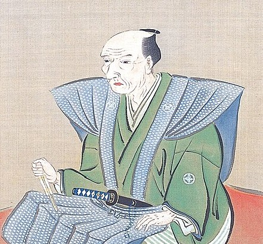
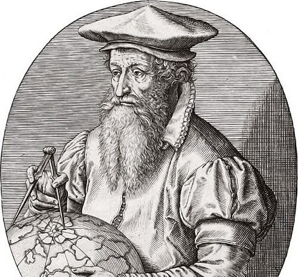
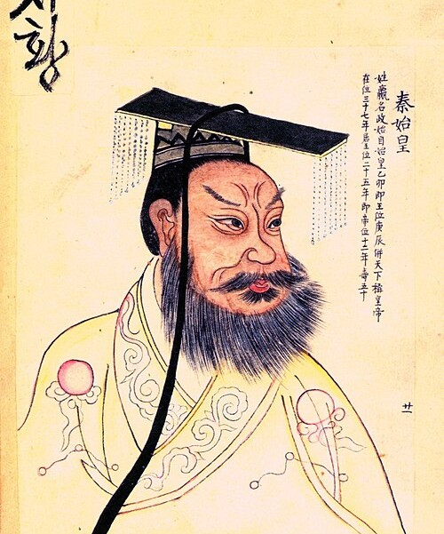

魅力的な講師陣
伊能忠敬先生をはじめとする、地図作りのプロフェッショナルが指導します。
地図アカデミー
自分の足で地図を作る、そんな夢を叶えるための場所です。
Googleマップに頼らず、自らの力だけで地図を作ることのできる人がどれだけいるでしょうか。
地図作りのプロフェッショナルと一緒に、唯一無二のスキルを身につけましょう。
伊能忠敬先生をはじめとする、地図作りのプロフェッショナルが指導します。
自らの歩幅で距離を測る「歩測」を使った地図作りなど、多くのフィールドワーク講座があります。
1クラス10人。先生が一人ひとりの理解度に目を配ります。

江戸時代の測量家。
日本地図を完成させた。
フィールドワークでの地図作製の授業を担当。

ルネサンス期の地理学者。
「メルカトル図法」を考案。
地図作りの歴史や文化を学ぶ授業を担当。

初めて中華を統一した始皇帝。
中国全土の地図作りを命令。
地図製作プロジェクトのマネジメント授業を担当。
実際の地図作り体験ができます。
無料体験の申し込み